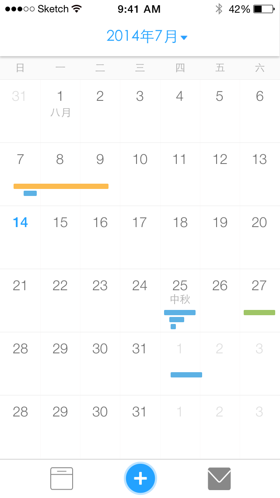
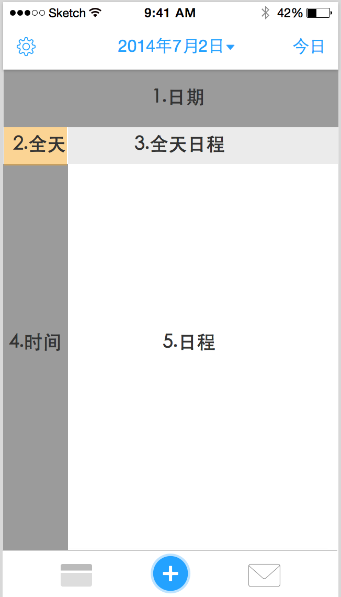
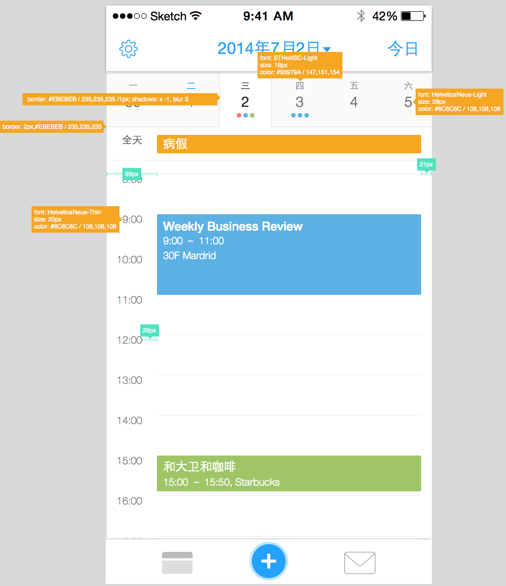
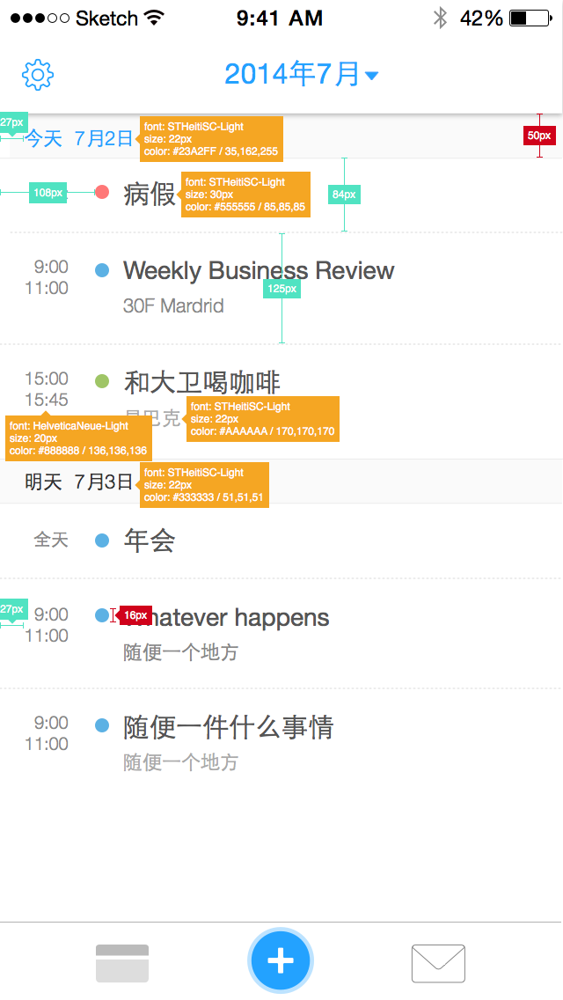

日历视图产品需求文档
1 概述
应用为了兼顾用户的使用习惯，提供了四种视图：月视图、周视图、日视图和列表视图。
如果无法观看视频，请安装最新版的Safari
- 日程矩形圆角弧度统一为2px
- 日程颜色为：#5CB1E4，#F5A623，#9FC566
2 月视图
2.1 交互
如果无法观看视频，请安装最新版的Safari
- 左右滑动切换月份。滑动时出现蒙版，蒙板上显示月份信息
- 切换月份时，顶部菜单栏的日期也跟随变化。
- 点击某一天，当天的日程从中间展开，展开的高度固定
- 点击第一排的某天，第一排不动，其余排下移固定高度
- 点击第二排的某天，第一排和第二排不动，其余排下移固定高度
- 点击中间两排时，上下两部分分别向上、向下移动固定距离
- 点击倒数第二排时，最后不排不动，其余向上移动固定距离
- 点击最后一排时，全部上线移动固定距离
- 如果固定高度内日程无法全部显示，则可以下拉查看当天的其他日程
- 同一周内切换日期，展开部分通过左右滑动来显示对应日期的日程


2.2 视觉
- 月视图行数按照当前月份的周数动态计算
- 从左到右，每行的宽度为：92,91,91,92,91,91,92
- 横线：#1A1A1A, 1px
- 竖线：#FBF9F9, 1px
- 全天日程bar的长度为72px,居中。位移最小单位1小时，长度3px
- 时长4个小时以内的日程bar长度为12px
- 时长为x，且x大于4，则bar的长度y=(x-4)*3+12
- 开始时间相差1小时，则移动3px
- 日程展开：
- 展开之后，固定高度为：410px
- 如果展开日程不完整，则可以上下滑动
- 展开区域可以左右滑动，切换天
- 展开之后，单个日程高度为112px
- 农历和节假日
- 显示重要的农历节日，例如除夕，中秋
- 显示重要的公历节日，例如国庆，五一
- 显示农历的初一和十五：比如“八月初一”显示为“八月”；“七月十五”显示为“十五”
- 显示班休状态

3 周视图 (暂缓)
3.1 交互
周视图提供左右滑动和上下滑动的交互方式，并且支持点击视图中时间添加日程。
- 周视图存在6个区域
- 区域1展示3天的日期
- 区域2显示“全天这两个字”
- 区域3显示3天得全天日程，高度随着日程的多少而变化
- 区域4显示0-24点得时间
- 区域5显示3天的日程
- 各个区域的交互方式如下：
- 区域的图层高度为0>1>2>3>4>5
- 区域4、5可以上线滑动
- 区域1、3、5可以左右滑动
- 默认时间为8:00-17:00
3.2 视觉及标注
- 区域1背景色为#FAFAFA，和月视图对应区域颜色一致
- “今天”的背景和文字均采用蓝色，颜色值如上图所示.
4 日视图
4.1 交互
日视图提供左右滑动和上下滑动两种交互，左右滑动切换日期，上线滑动切换时间，支持点击时间区域创建日程

- 日视图存在5个区域
- 区域1显示一周的日期，支持左右滑动，切换周；同时，切换日期时，对应的日期也发生变化
- 区域2显示“全天”2个字
- 区域3显示全天的日程
- 区域4显示时间
- 区域5显示某天的日程
- 各个区域的交互方式如下:
- 区域的图层高度为1>2>3>4>5
- 3,5左右滑动，1上对应的日期发生变化
- 1可左右滑动，直接切换1周
- 4，5可上线滑动，切换时间
- 默认时间为8:00-17:00
- 区域1日程下方用圆点表示日程
- 圆点的颜色代表日程的类别
- 圆点个数代表当天日程个数，最多放置4个圆点
4.2 视觉及标注

5 列表视图（暂缓）
5.1 交互
列表视图可以上下滑动
5.2 视觉和标注
